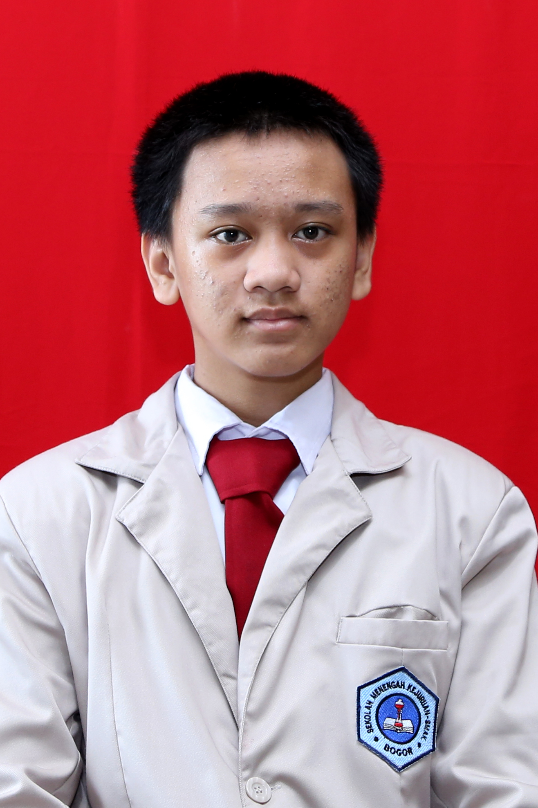

Pada akhir Desember tahun 2019 terjadi suatu bencana yang begitu besar, yaitu munculnya Corona Virus di Wuhan, Cina. Virus tersebut menyebabkan pandemi di seluruh dunia, sehingga banyak negara yang melakukan LockDown termasuk Indonesia. Corona Virus muncul pertama pada bulan Maret tahun 2020, dan pada bulan itu juga Indonesia melakukan LockDown, sehingga seluruh sekolah di Indonesia melakukan Sistem Pembelajaran Jarak Jauh (PJJ)
Sistem Pembelajaran Jarak Jauh (PJJ) memberikan kita pengalaman baru dalam belajar. Ada beberapa pengalaman baru bagi saya pada saat melakukan PJJ yaitu belajar dengan Virtual Meeting, saya merasa agak kesulitan dalam belajar tersebut karena tidak dapat berdiskusi secara langsung dengan teman ataupun guru juga lingkungan rumah memiliki suasana yang berbeda dengan sekolah sehingga membuat saya agak menjadi malas dalam belajar. Namun karena LockDown ini saya jadi lebih banyak memiliki waktu bersama keluarga. Selain itu karena dilakukannya LockDown, maka pembelajaran saat ini sangat memaksimalkan penggunaan teknologi yang memiliki pengalaman seru yang tidak ada pada saat sekolah normal.
BIODATA PENULIS

| Nama | Salman Maulana Kamil |
| Tempat/Tanggal Lahir | Bogor, 7 Juli 2004 |
| Asal Sekolah | SMK-SMAK Bogor |
| Kelas | XI-2 |
| Hobi | Mengdengar musik, dan bermain game |